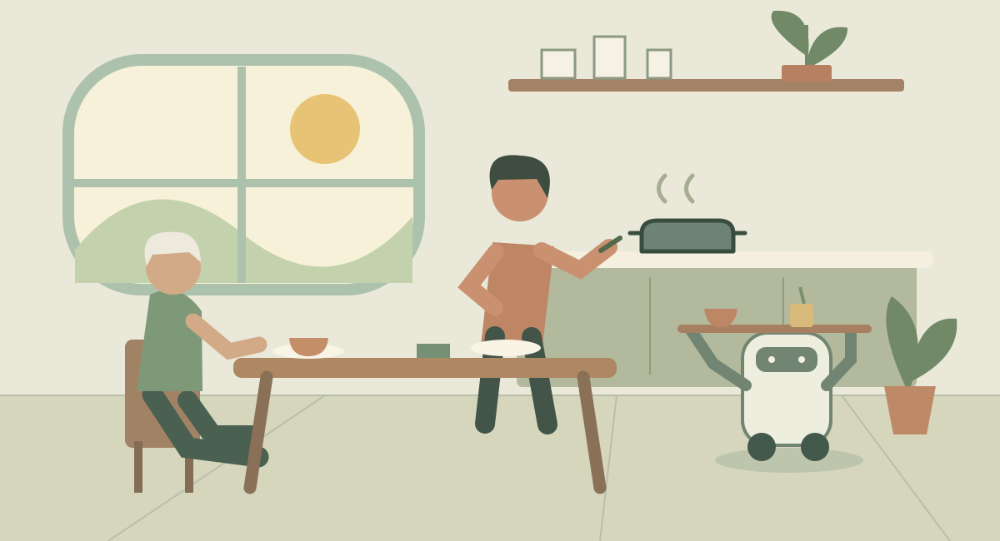
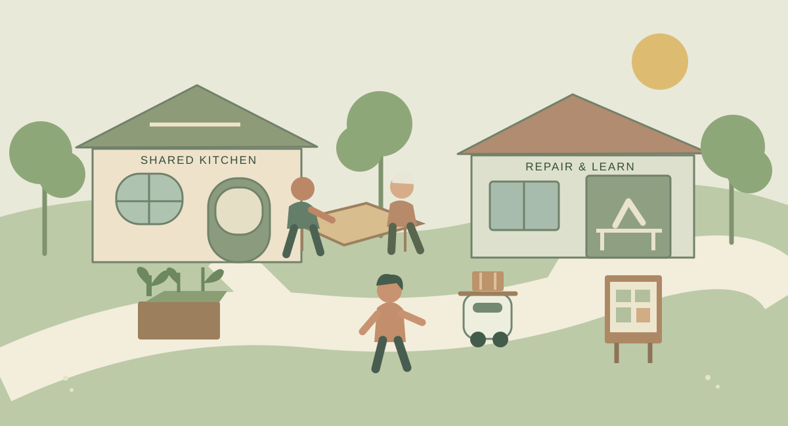
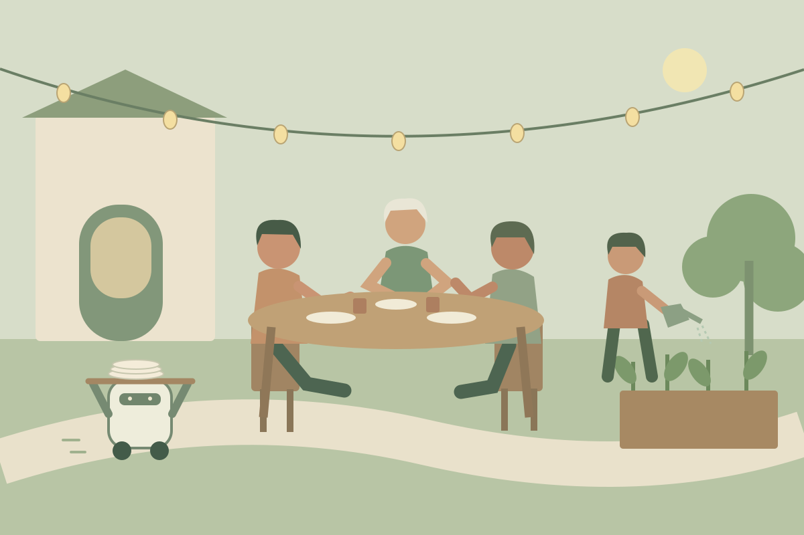
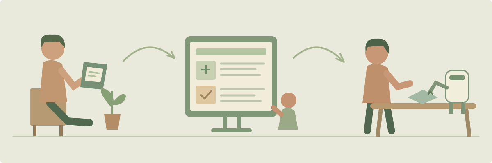

A / COOKThe shared kitchen
Adjustable counters, shared recipes, and help with the heavy lifting.
See breakfast here →02 / OUR COMMUNITY · AN IMAGINED FUTURE
Shared robots. Shared knowledge. A place to cook, learn, and gather, without needing to own the technology.
Built around people.
Connected by a small,
useful community website.

A delivery robot is bringing ingredients to the kitchen.
Choose a destination and watch a small delivery unfold while neighbors walk and gather. An imagined scene, not a robotics simulation.
THE PHYSICAL SIDE

A / COOKAdjustable counters, shared recipes, and help with the heavy lifting.
See breakfast here → B / LEARN
B / LEARNLearn a skill. Fix something. Meet the people who keep it all running.
Meet the learners →
C / GATHERWide paths, planting beds, and a table with room for another neighbor.
Stay for dinner →THE DIGITAL SIDE
A small, useful internet that leads back to shared life. Fictional posts, not live bookings.

LEND A HAND
We can move the pots. Can you bring a recipe?
Bring a recipe, help chop, or simply join us for dinner. Seated preparation stations are available. In this imagined community, residents sign up online or with the kitchen host.
See how we cook together →LEARN SOMETHING
Bring a towel and a little patience. No coding needed.
Try a demonstration, watch where the robot struggles, and compare ways of arranging the fabric. The goal is to understand its abilities, not pretend it can already handle every garment.
Visit the workshop →KEEP THINGS GOING
Meet a technician and see how a shared robot is repaired.
Paid technicians handle repairs, supported by a shared maintenance budget. Residents can learn alongside them, but volunteering is not a replacement for wages. A small loan cart covers deliveries during the repair.
Not online? The same notices are printed at the kitchen entrance. A community host can help you join an activity.
A FUTURE WE WOULD KEEP WORKING ON
The interesting question is not only “What can a robot do?”
It is “What can we do together?”
In this proposal, basic access comes through a community membership with reduced fees for people who need them. It is a starting idea, not a solved funding model. Residents would need to decide together what is affordable and fair.
Robots could reduce some heavy and repetitive tasks. That does not automatically mean better jobs. I imagine paid training and maintenance roles, with workers involved in deciding which tasks change and how the benefits are shared.
No. Cooking, gardening, and making things can be enjoyable. The community offers assistance without making efficiency the measure of every activity. Doing something by hand still has a place.
DESIGNER'S NOTE / WEEK 2 & 3
Not a prediction or a finished solution. A robotics student's sketch of a community worth building.
My project imagines a neighborhood in 2040 where people and robots share ordinary tasks. As a robotics student, I am interested in what happens after a robot leaves the lab and becomes part of everyday life. I did not want to make robots look like either perfect replacements for people or threats to society. Instead, I focused on cooking, folding clothes, repairing equipment, and gathering for dinner.
This future is meant to support residents with different abilities and resources, especially older people who find physical tasks difficult, busy caregivers, and students who want to learn practical skills. Shared robots could let people participate in activities they might otherwise miss. A resident who cannot lift a heavy pot can still help decide how a meal tastes. For me, that is more meaningful than simply making cooking faster.
The community website connects the physical spaces. Its noticeboard helps neighbors find activities, offer knowledge, and understand when equipment needs maintenance. I imagined a small, useful internet that leads people back into shared life, rather than keeping them scrolling. Printed notices and a community host offer another way to participate.
I used cream backgrounds, green accents, serif headings, and original scene illustrations to make the future feel familiar and lived in. The first new page follows one day; the second explains the places and cooperation behind it. Consistent navigation, time links, and next-page invitations guide that journey. Flexbox allows scenes and notices to rearrange on smaller screens. Expandable notes let visitors explore details without overwhelming the main story. A small p5.js scene lets visitors choose a delivery destination while neighbors move around the community. A pause button and reduced motion support keep the animation optional.
Designing this world also meant considering who pays for equipment and who maintains it. I included reduced fees, paid technicians, and training as possible approaches, not complete solutions. My responsibility as a designer is to make those questions visible while showing a future where technology gives more people a way to contribute and belong.